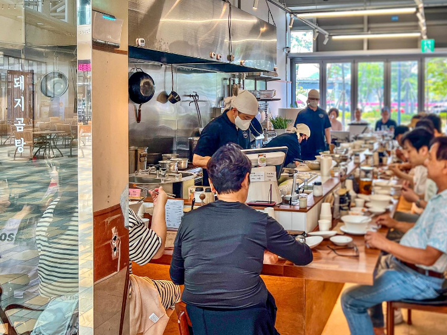

Our Story
우리는 좋은 음식이 좋은 삶을 만든다고 믿는다.
신선하고 질좋은 재료로 기교를 부리지 않고. 솔직히 담아내는 한그릇이 당신을 행복하게 했으면 좋겠다.
얼마나 했느냐는 중요하지 않다. 얼마나 정성을 기울이냐가 중요하다.
정성스럽게 끓인 돼지곰탕의 진미
미쉐린 가이드 선정 맛집에서 맛보는
부산의 전통 돼지곰탕
나막집의 시그니처 메뉴

채수 기반으로 다시마 다시멸치를 첨가하여 우려낸 육수에 돈사골을 우려낸 육수를 블렌딩하여 만든 나막집 시그니처육수에 돈전지를 삶아 저온 숙성 후 얇게 올린 메뉴
돼지곰탕의 밥대신 한국의 전통면인 칼국수를 삶아 돈전지를 삶아 저온 숙성 후 얇게 저며 올린 메뉴
품질좋은 돼지의 여러부위를 매일 당일소진을 원칙으로 삶아내는 메뉴
우리는 좋은 음식이 좋은 삶을 만든다고 믿는다.
신선하고 질좋은 재료로 기교를 부리지 않고. 솔직히 담아내는 한그릇이 당신을 행복하게 했으면 좋겠다.
얼마나 했느냐는 중요하지 않다. 얼마나 정성을 기울이냐가 중요하다.
나막집의 소식
나막집이 미쉐린 가이드 선정 셀렉티드 맛집에 2년연속 이름을 올리게 되었습니다. 나막집을 찾아주시고 사랑해 주시는 모든 고객님들께 항상 감사하는 마음으로 더 좋은 맛과 서비스를 제공하겠습니다.
"부산은 돼지 국밥의 도시답게 국밥의 스타일도 다양하다. 돼지 국밥 고유의 맛을 유지하면서도 가게마다 국물을 내는 방식을 조금씩 달리하는 점이 특징이다. 나막집은 고기 육수에서 채수의 비율을 높여 진득한 맛보다는 가벼우면서도 깔끔한 국물 맛을 즐길 수 있다."- 미쉐린 가이드
버튼을 눌러 나막집을 찾아주세요
부산 남구 분포로 145
스퀘어동 1층 1068호
부산 수영구 민락수변로17번길 36
타워더모스트 광안 101호
부산광역시 해운대구 해운대해변로 163
상가동 109호(우동, 현대베네시티아파트)
0507-1383-4882
매주 월요일: 휴무 (3호점)
월~일: 11:30 - 20:30 (1~2호점)
브레이크타임: 15:00 - 17:00